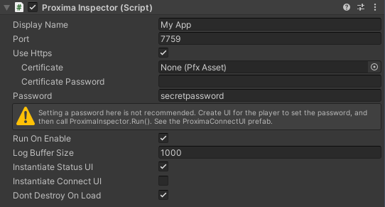
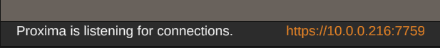

Getting Started
Installation
Feature Overview
Connection
Supported Platforms
Connect to Your Game
Security Considerations
All Configuration Options
Inspector
GameObject Inspector
Adding Buttons
Frequently Asked Questions
Logs
Log Viewer
Viewing Logs Offline
Console
Console Window
Built-in Commands
Custom Commands
Extras
Deep Links
Connect to Your Game
Building your Game with Proxima (non-WebGL)
- Add an empty GameObject to your scene and add a Proxima Inspector component.
- Assign a 4 or 5 digit port number that is not already in use on your target device.
- If you want your connection to be encrypted, enable HTTPS. This is required for Android and iOS.
- Your Proxima Inspector component should look something like this: 
- Build, deploy, and run your game.
Connecting to Your Game (non-WebGL)
- Ensure that both the device running your game and the device running your browser are connected to the same local network.
- If you've enabled the "Instantiate Connect UI", you can click the Proxima icon and click "Open in Browser". Otherwise:
- Navigate to http://[your-ip-address]:[port]. How do I find my device's IP address?
If you've enabled HTTPS, your browser may warn you that Proxima's certificate is not trusted. It is ok to bypass this warning if you're connecting to your device's IP directly on your local network.
See the Security Considerations page for more information.
Building and Connecting to Your Game (WebGL)
- WebGL builds connect directly through a BroadcastChannel in the browser. The port and HTTPS options are not used.
- This also means you cannot connect to WebGL builds remotely. You must connect in the same browser that is running the game, and you must use the same URL origin.
- If you've enabled the "Instantiate Connect UI", you can click the Proxima icon and click "Open in Browser". Otherwise:
- Navigate to http://your-game-address/path/to/game/StreamingAssets/Proxima/index.html
How do I find my device's IP address?
If you checked Instantiate Status UI on the Proxima Inspector component, your device IP will be displayed at the bottom of your game.
Alternatively, you can also find your device's IP address by:
- Windows: In the command line type: ipconfig | findstr /C:"IPv4 Address"
- macOS: In the terminal type: ifconfig getifaddr en0
- Android: Go to "Settings > Wi-Fi Settings > ... > Advanced" and scroll to the bottom.
- iOS: Go to "Settings > Wi-Fi > Your Wi-Fi" and scroll down.
Troubleshooting
If you're unable to connect to Proxima, check the following:
- Your game is running (not paused or in the background).
- Both devices are on the same network.
- The chosen port is open on the device.
- Your device's firewall is not blocking the chosen port.
- Your router's firewall is not blocking the chosen port.
- For WebGL builds, you are using the same browser as the game and the same URL origin.
© 2023 Virtual Maker Corporation